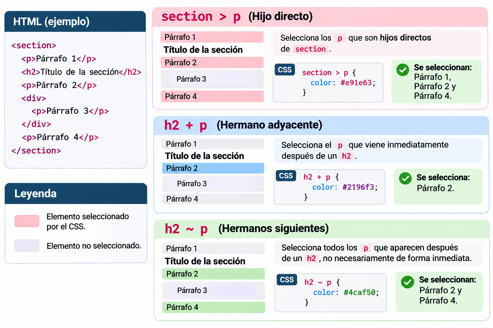
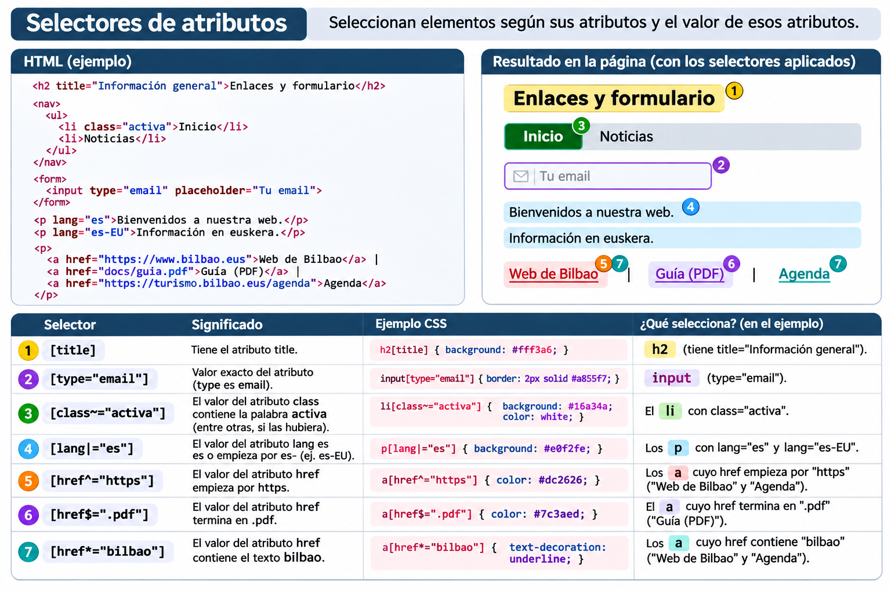

CSS hautatzaileak, kaskada eta herentzia¶
CSS erabiliz, HTML elementuen itxura alda dezakegu. Horretarako, lehenengo zein elementuri aplikatu nahi diegun estiloa adierazi behar dugu: horixe da hautatzailearen lana.
Ikasi eta praktikatu
Azalpen bakoitzean HTMLa, CSSa eta espero den emaitza aurkituko dituzu. Ondoren, erabili CSS hautatzaileen laborategia (54 ariketa) ikasitakoa praktikatzeko.
1. CSS arau baten egitura¶
h1: hautatzailea; zein elementu hautatucoloretafont-size: propietateak; zer aldatudarkblueeta2rem: balioak; nola aldatupropietatea: balioa;: adierazpena; giltzen artean adierazpen bat baino gehiago egon daiteke
Gogoratu
Hautatzaileak nori aplikatuko zaion esaten du; adierazpenek, berriz, zer estilo aplikatuko den.
2. Oinarrizko hautatzaileak¶
| Hautatzailea | Adibidea | Zer hautatzen du? |
|---|---|---|
| Elementua | p |
p elementu guztiak |
| Klasea | .oharra |
class="oharra" duten elementuak |
| IDa | #nagusia |
id="nagusia" duen elementua |
| Unibertsala | * |
Elementu guztiak |
| Multzokatzea | h1, h2, p |
Hiru hautatzaileetako edozeinekin bat datozenak |
2.1. Elementuak eta klaseak¶
Zergatik? p hautatzaileak hiru paragrafoak hautatzen ditu; .nabarmena hautatzaileak, berriz, klase hori duen bakarra. Azken horretan color propietatea zehatzagoa den arauak ezartzen du.
2.2. Klasea eta elementu mota batera¶
.nabarmena { color: red; } /* Klase hori duen edozein elementu */
p.nabarmena { color: blue; } /* Klase hori duten p elementuak soilik */
Klase bera hainbat elementutan erabil daiteke. IDak, aldiz, bakarra izan behar du HTML dokumentu berean. CSS estilo orokorrak aplikatzeko, normalean klaseak lehenestea komeni da, berrerabilgarriagoak direlako.
2.3. Hautatzaile unibertsala¶
Horrela, elementuen zabalera eta altuera kalkulatzean padding eta border kontuan hartzen dira. Ohikoa da proiektuetan. Aldiz, * { margin: 0; padding: 0; border: 0; } bezalako reset orokorrak kontuz erabili: nabigatzailearen estilo erabilgarriak ere kentzen dituzte.
3. Erlazio-hautatzaileak¶
Hautatzaile hauek HTMLko egituran oinarritzen dira.
| Idazkera | Izena | Zer hautatzen du? |
|---|---|---|
section p |
Ondorengoa | section baten barruko p guztiak, edozein sakoneratan |
section > p |
Seme zuzena | section elementuaren seme zuzen diren p elementuak |
h2 + p |
Ondoko anaia | h2 baten ondoren berehala datorren p anaia |
h2 ~ p |
Ondorengo anaiak | h2 baten ondoren datozen p anaiak, ez derrigor jarraian |

3.1. Ondorengoa (>) alderatzea¶
Kontuz emaitzarekin
Bi CSS arauak batera aplikatzen badira, A eta C gorriak izango dira, section > p araua geroago idatzita dagoelako eta bi hautatzaileek espezifikotasun bera dutelako. B urdina izango da.
3.2. Ondoko anaia (+) eta ondorengo anaiak (~)¶
Lehenengo paragrafoa (gorria eta lodia)
Bigarren paragrafoa (lodia)
Bi elementuek guraso bera izan behar dute anaiak izateko. + hautatzaileak berehalako ondoko anaia hautatzen du; ~ hautatzaileak, berriz, ondoren datozen anaia guztiak, hautatzailearekin bat badatoz.
4. Atributu-hautatzaileak¶
HTML elementuen atributuak eta balioak aztertzen dituzte.
| Hautatzailea | Esanahia | Adibidea |
|---|---|---|
[title] |
title atributua dauka |
[title] |
[type="email"] |
Balio zehatza | input[type="email"] |
[class~="aktiboa"] |
Hitz bereizi bat | [class~="aktiboa"] |
[lang|="eu"] |
eu edo eu- hasiera |
[lang|="eu"] |
[href^="https"] |
Balioa horrekin hasten da | a[href^="https"] |
[href$=".pdf"] |
Balioa horrekin amaitzen da | a[href$=".pdf"] |
[href*="bilbao"] |
Balioak testu hori dauka | a[href*="bilbao"] |

Adibide erabilgarria: PDF estekak bereiztea¶
Xehetasun garrantzitsua
[href$=".pdf"] hautatzaileak ez du .pdf?download=1 amaiera duen URL bat hautatzen. Hautatzaileak atributuaren testua aztertzen du, ez fitxategiaren benetako mota.
5. Pseudoklaseak (:)¶
Pseudoklaseek elementuaren egoera edo kokapena adierazten dute.
5.1. Erabiltzailearen interakzioa¶
| Pseudoklasea | Noiz aplikatzen da? |
|---|---|
:hover |
Sagua elementuaren gainean dagoenean |
:focus |
Elementuak fokua duenean |
:focus-visible |
Nabigatzaileak fokuaren adierazlea erakustea egokitzat jotzen duenean |
:active |
Elementua aktibatzen ari denean (adibidez, klik egitean) |
:checked |
Checkbox edo radio hautatuta dagoenean |
:disabled |
Formulario-kontrola desgaituta dagoenean |
nav a:hover { color: #b42318; }
nav a:focus-visible {
outline: 3px solid #f0b429;
outline-offset: 3px;
}
Irisgarritasuna
Ez kendu fokuaren adierazlea outline: none erabiliz ordezko ikusgarririk jarri gabe. Teklatuarekin nabigatzen duten erabiltzaileek fokua non dagoen ikusi behar dute. :hover bakarrik ez da nahikoa.
5.2. Elementuen kokapena¶
| Pseudoklasea | Zer hautatzen du? |
|---|---|
:first-child |
Gurasoaren lehenengo elementu-semea |
:last-child |
Gurasoaren azken elementu-semea |
:only-child |
Gurasoaren elementu-seme bakarra |
:nth-child(2) |
Gurasoaren bigarren elementu-semea |
:nth-child(odd) |
Posizio bakoitietan dauden semeak |
:nth-child(even) |
Posizio bikoitietan dauden semeak |
:nth-of-type(2) |
Mota bereko bigarren elementua, anaien artean |
nth-child eta nth-of-type ez dira gauza bera
p:nth-child(2) → lehen paragrafoa (div-aren bigarren semea)
- p:nth-of-type(2) → bigarren paragrafoa (bigarren p elementua)
5.3. Ezeztapena: :not()¶
:not() erabilgarria da salbuespenak adierazteko. Hala ere, arau oso zabalak, hala nola :not(p), kontuz erabili: espero ez dituzun elementu askori eragin diezaiekete.
6. Pseudoelementuak (::)¶
Pseudoelementuek elementu baten zati bat edo sortutako edukia hautatzen dute.
| Pseudoelementua | Erabilera |
|---|---|
::first-letter |
Testu-bloke baten lehenengo letra |
::first-line |
Testu-bloke baten lehenengo lerroa (zabaleraren arabera alda daiteke) |
::before |
Elementuaren edukiaren hasieran sortutako edukia |
::after |
Elementuaren edukiaren amaieran sortutako edukia |
::selection |
Erabiltzaileak hautatutako testua |
::placeholder |
Formulario-eremu baten adibide-testua |
Edukia eta aurkezpena
::before eta ::after elementuek content propietatea behar dute sortutako edukia agertzeko. Ez erabili CSS bidez sortutako edukia informazio funtsezko bakarra emateko; informazio garrantzitsua HTMLan bertan egon dadila.
7. Kaskada: bi arauk elementu bera aldatzen dutenean¶
CSSk hainbat arau konbinatzen ditu. Propietate berean gatazka dagoenean, kaskadak erabakitzen du zein balio aplikatu.
Ikasleentzat, lehenengo honako galdera hauek egitea komeni da:
- Bi arauak elementu berari aplikatzen al zaizkio?
- Biek propietate bera aldatzen al dute?
- Zein da arauen jatorria, garrantzia eta kaskada-geruza?
- Geruza eta garrantzi bereko arauak badira, zeinek du espezifikotasun handiagoa?
- Espezifikotasuna berdina bada, zein dator geroago?
7.1. Espezifikotasuna: eredua¶
| Hautatzailea | ID | Klase / atributu / pseudoklase | Elementu / pseudoelementu |
|---|---|---|---|
p |
0 | 0 | 1 |
.oharra |
0 | 1 | 0 |
p.oharra |
0 | 1 | 1 |
#nagusia |
1 | 0 | 0 |
#nagusia p.oharra |
1 | 1 | 1 |
Espezifikotasuna zutabez zutabe, ezkerretik eskuinera alderatzen da: ID bat edozein klase-kopuru baino lehenago doa. Ez da hamartarren batura bat. Inline estiloek (style="...") berezko lehentasun handiagoa dute estilo-orrietako hautatzaile arruntek baino; !important, geruzek eta jatorriek emaitza alda dezakete.
Zergatik? Hiru arauek paragrafoa hautatzen dute, baina #mezua hautatzaileak espezifikotasun handiagoa du.
7.2. Espezifikotasun bera: ordena¶
Bi arauak jatorri, garrantzi, geruza eta espezifikotasun berekoak direnez, azkena aplikatzen da.
7.3. !important: kontuz¶
!important ez da ohiko konponbidea: kaskadaren garrantzi-ordena aldatzen du, eta ondorengo aldaketak zaildu ditzake. Lehenengo, egiaztatu hautatzaileak, espezifikotasuna eta arauen ordena.
Aurrerago: @layer
CSS modernoan, @layer erabil daiteke estiloak geruzatan antolatzeko. Geruzen ordenak espezifikotasuna baino lehenago eragin dezake kaskadan. Lehen mailan nahikoa da jakitea espezifikotasuna ez dela gatazka guztien erantzun bakarra.
8. Herentzia: zer jasotzen dute semeek?¶
HTML elementu batzuek gurasoaren CSS propietateen balioak heredatzen dituzte.
color eta font-family normalean heredatzen dira; border, margin, padding, width eta background-color, normalean, ez. Horregatik, adibidean semeen testua berdea da, baina ez dute bakoitzak bere ertz berdea.
| Balioa | Zer egiten du? |
|---|---|
inherit |
Gurasoaren kalkulatutako balioa erabiltzen du |
initial |
Propietatearen hasierako CSS balioa erabiltzen du |
unset |
Heredagarria bada, inherit; bestela, initial |
revert |
Uneko jatorriaren eragina atzera botatzen du, kaskadaren arabera |
Herentzia ez da hautatzailea
.kutxa p arauak paragrafoa zuzenean hautatzen du. Aldiz, .kutxa { color: green; } arauak kutxa hautatzen du, eta paragrafoak kolorea herentziaz jaso dezake. Bi mekanismo desberdin dira.
Praktikatzeko¶
Ireki CSS hautatzaileen laborategia — 54 ariketa
Laborategiko ariketak egin aurretik, saiatu erantzuna zergatik den zuzena azaltzen. Hautatzaile batek funtzionatzea ez da nahikoa: zer elementu hautatzen duen ulertzea da helburua.